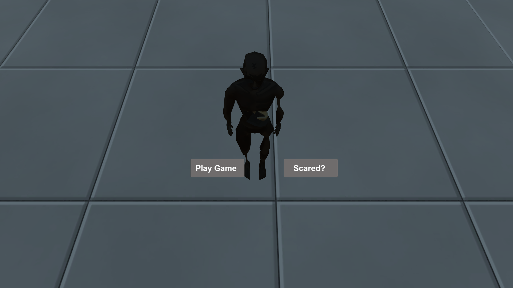

This entire project is about a open-world game called "The Rise Of The Unknown". It's an ongoing project which still requires a lot more features and optimization.Couple of months ago, I got my hands on the game called "Dying Light:The Following" developed by Techland and published by Warner Bros.Interactive Entertainment.I knew about the existence of zombie games but i wasn't really interested in them until i played this.This is why i decided to try something related to zombies.As i started making games i realized how much hardwork is put into these games but at the same time it's hard to describe the feeling of resolving something or when you can make your main character walk and that's the reason i love game development.